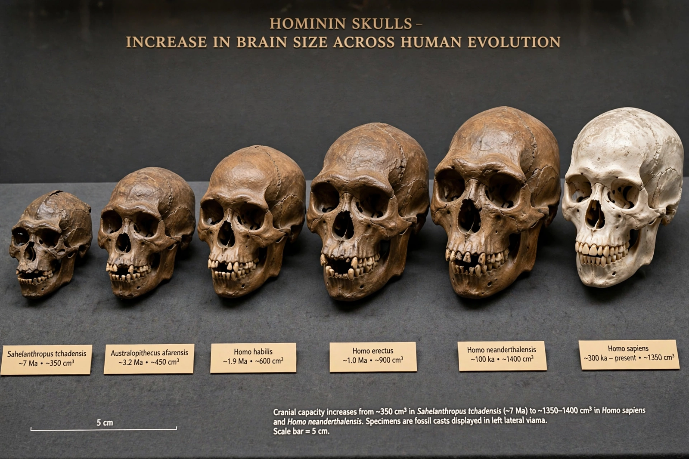

Hominin
From Wikipedia, the free encyclopedia

A hominin is a member of the taxonomic tribe Hominini — in modern usage, modern humans, extinct human species and all their immediate ancestors after the split from the chimpanzee lineage (including Australopithecus, Paranthropus and Homo), but not the other great apes. Some twenty or more hominin species are known from fossils spanning the last seven million years, of which only Homo sapiens survives.
Definition and scope
Terminology has shifted with cladistics: 'hominid' once meant humans alone but now denotes all great apes (family Hominidae), leaving 'hominin' for the human branch. The earliest candidates — Sahelanthropus (c. 7 Ma, Chad), Orrorin (c. 6 Ma, Kenya), Ardipithecus (Ethiopia) — are near the chimpanzee divergence and their hominin status is argued from teeth, skull base and (for Orrorin) femora suggesting bipedalism.
Pattern of evolution
Hominin evolution is a bush, not a ladder: multiple species often coexisted (in the Turkana Basin four at once around 1.8 Ma), bipedalism preceded brain expansion by millions of years, stone tools predate Homo, and interbreeding between late species (Neanderthals, Denisovans and sapiens) blurs the branches into a braided stream — the working picture of twenty-first-century palaeoanthropology.